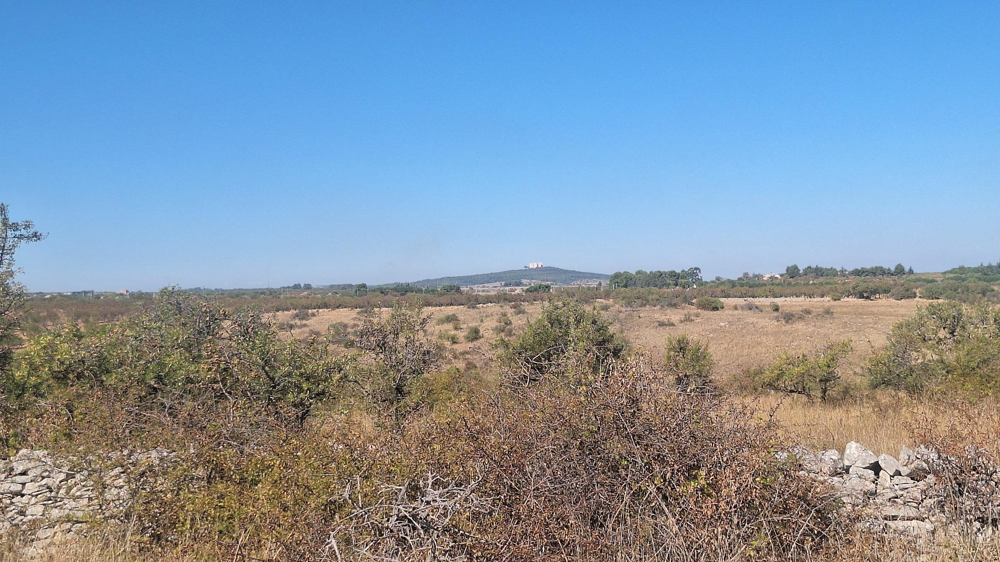
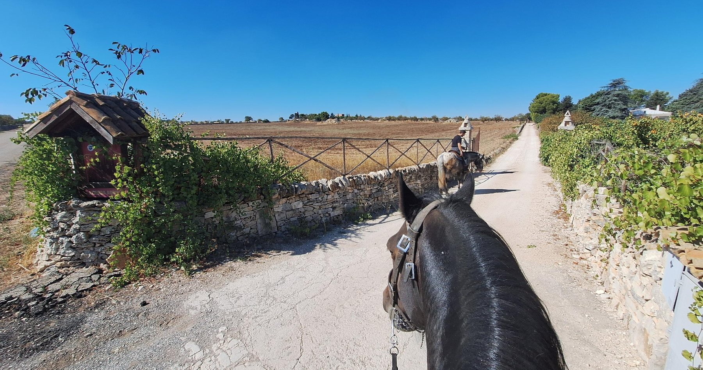
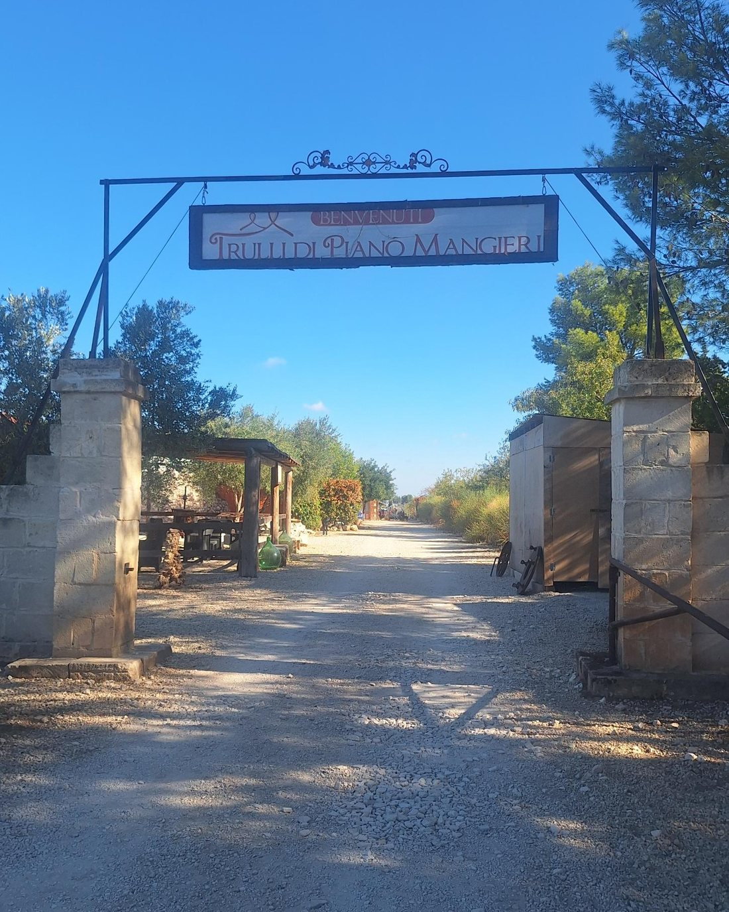
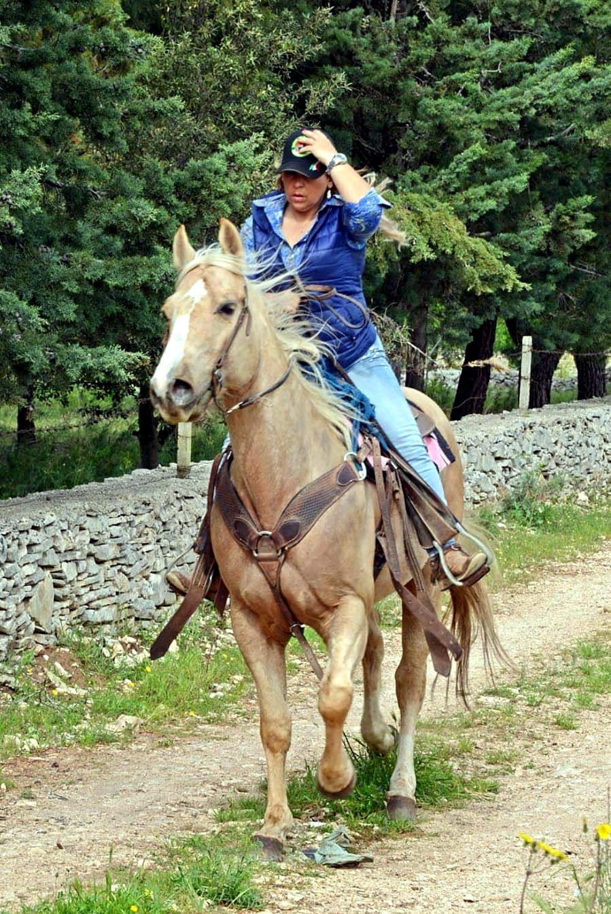
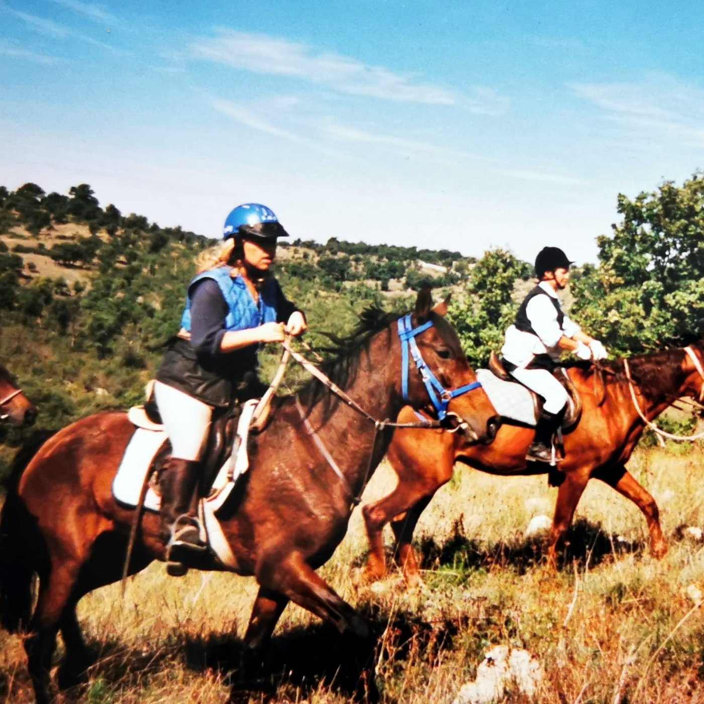
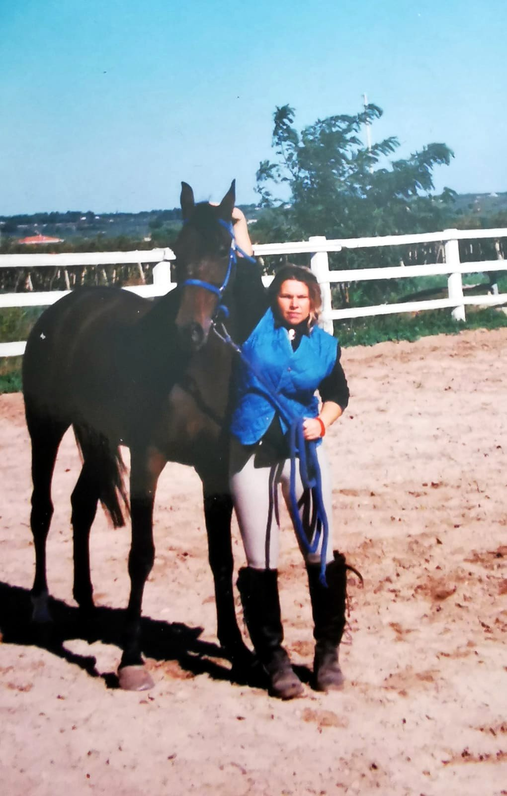

Come arrivare
Il maneggio è dentro la struttura dei Trulli di Piano Mangieri, a Corato (BA). Imposta il navigatore e, una volta vicino, cerca questi due punti di riferimento.

Il maneggio si trova nella struttura dei Trulli di Piano Mangieri, nei pressi del Bosco Cecibizzo, tra le campagne di Corato.
Sede legale: Strada Esterna Piede Piccolo n. 8, 70033 Corato (BA)
Il maneggio è dentro la struttura dei Trulli di Piano Mangieri, a Corato (BA). Imposta il navigatore e, una volta vicino, cerca questi due punti di riferimento.



Ex campionessa di endurance e guida equestre qualificata CSEN, Antonella ha imparato dalle lunghe distanze a conoscere il cavallo prima ancora di montarlo e a non forzarne mai i tempi.
Oggi porta questa esperienza nelle passeggiate e nelle lezioni del Victoria Country Club, scegliendo per ciascuno il cavallo e il percorso giusti, dalla prima volta in sella alla galoppata tra i campi.


Dall'album: gli anni dell'endurance